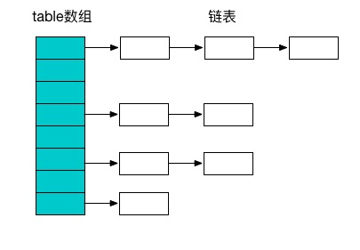

HashMap基于哈希表的Map接口实现，是以key-value存储形式存在。
系统会根据hash算法来计算key-value的存储位置，可以通过key快速存取value。
HashMap基于hashing原理，我们通过put()和get()方法储存和获取对象。当我们将键值对传递给put()方法时，它调用键对象的hashCode()方法来计算hashcode，然后找到bucket位置来储存值对象。当获取对象时，通过键对象的equals()方法找到正确的键值对，然后返回值对象。
HashMap使用链表来解决碰撞问题，当发生碰撞了，对象将会储存在链表的下一个节点中。 HashMap在每个链表节点中储存键值对对象。
当两个不同的键对象的hashcode相同时会发生什么？ 它们会储存在同一个bucket位置的链表中。键对象的equals()方法用来找到键值对。
定义
HashMap实现了Map接口，Map接口定义了键映射到值的规则。HashMap继承了AbstractMap，AbstractMap提供接口的主要实现，以最大限度的减少HashMap实现Map接口所需的工作。
初始容量和负载因子
默认初始容量16，默认负载因子0.75。这两个参数是影响HashMap性能的重要参数，其中容量表示哈希表中桶的数量，初始容量是创建哈希表时的容量，负载因子是哈希表在其容量自动增加之前可以达到多满的一种尺度，它衡量的是一个散列表的空间的使用程度，负载因子越大表示散列表的装填程度越高，反之愈小。对于使用链表法的散列表来说，查找一个元素的平均时间是O(1+a)，因此如果负载因子越大，对空间的利用更充分，然而后果是查找效率的降低；如果负载因子太小，那么散列表的数据将过于稀疏，对空间造成严重浪费。系统默认负载因子为0.75，一般情况下我们是无需修改的。
数据结构
Java中最常用的两种结构是数组和模拟指针(引用)，几乎所有的数据结构都可以利用这两种来组合实现，HashMap也是如此。实际上HashMap是一个“链表散列”，如下是它数据结构：

HashMap底层实现还是数组，只是数组的每一项都是一条链。其中参数initialCapacity就代表了该数组的长度。
1 | //空表 |
每次新建一个HashMap时，都会初始化一个table数组。table数组的元素为Entry节点。
其中Entry为HashMap的内部类，它包含了键key、值value、下一个节点next，以及hash值，这是非常重要的，正是由于Entry才构成了table数组的项为链表。
存储实现：put(key,value)
1 | public V put(K key, V value) { |
通过源码我们可以清晰看到HashMap保存数据的过程为：首先判断表是否为空，为空的话，先扩展表；然后判断key是否为null，若为null，则直接调用putForNullKey方法。若不为空则先计算key的hash值，然后根据hash值搜索在table数组中的索引位置，如果table数组在该位置处有元素，则通过比较是否存在相同的key，若存在则覆盖原来key的value，否则将该元素保存在链头（最先保存的元素放在链尾）。若table在该处没有元素，则直接保存。
迭代：此处迭代原因就是为了防止存在相同的key值，若发现两个hash值（key）相同时，HashMap的处理方式是用新value替换旧value，这里并没有处理key，这就解释了HashMap中没有两个相同的key。
int hash = hash(key);hash方法，计算key的hash值，代码如下：1
2
3
4
5
6
7
8
9
10
11
12
13
14final int hash(Object k) {
int h = hashSeed;
if (0 != h && k instanceof String) {
return sun.misc.Hashing.stringHash32((String) k);
}
h ^= k.hashCode();
// This function ensures that hashCodes that differ only by
// constant multiples at each bit position have a bounded
// number of collisions (approximately 8 at default load factor).
h ^= (h >>> 20) ^ (h >>> 12);
return h ^ (h >>> 7) ^ (h >>> 4);
}对于HashMap的table而言，数据分布需要均匀（最好每项都只有一个元素，这样就可以直接找到），不能太紧也不能太松，太紧会导致查询速度慢，太松则浪费空间。计算hash值后，怎么才能保证table元素分布均与呢？我们会想到取模，但是由于取模的消耗较大，HashMap是这样处理的：调用indexFor方法。
1
2
3
4static int indexFor(int h, int length) {
// assert Integer.bitCount(length) == 1 : "length must be a non-zero power of 2";
return h & (length-1);
}HashMap的底层数组长度总是2的n次方，在构造函数中存在：capacity <<= 1;这样做总是能够保证HashMap的底层数组长度为2的n次方。当length为2的n次方时，h&(length - 1)就相当于对length取模，而且速度比直接取模快得多，这是HashMap在速度上的一个优化。
indexFor方法，该方法仅有一条语句：h&(length - 1)，这句话除了上面的取模运算外还有一个非常重要的责任：均匀分布table数据和充分利用空间。
当length = 2^n时，不同的hash值发生碰撞的概率比较小，这样就会使得数据在table数组中分布较均匀，查询速度也较快。
这里我们再来复习put的流程：当我们想往一个HashMap中添加一对key-value时，系统首先会计算key的hash值，然后根据hash值确认在table中存储的位置。若该位置没有元素，则直接插入。否则迭代该处元素链表并依此比较其key的hash值。如果两个hash值相等且key值相等(e.hash == hash && ((k = e.key) == key || key.equals(k))),则用新的Entry的value覆盖原来节点的value。如果两个hash值相等但key值不等 ，则将该节点插入该链表的链头。具体的实现过程见addEntry方法，如下：
1 | void addEntry(int hash, K key, V value, int bucketIndex) { |
1 | void createEntry(int hash, K key, V value, int bucketIndex) { |
- 链的产生：这是一个非常优雅的设计。系统总是将新的Entry对象添加到bucketIndex处。如果bucketIndex处已经有了对象，那么新添加的Entry对象将指向原有的Entry对象，形成一条Entry链，但是若bucketIndex处没有Entry对象，也就是e==null,那么新添加的Entry对象指向null，也就不会产生Entry链了。
- 扩容问题：随着HashMap中元素的数量越来越多，发生碰撞的概率就越来越大，所产生的链表长度就会越来越长，这样势必会影响HashMap的速度，为了保证HashMap的效率，系统必须要在某个临界点进行扩容处理。该临界点在当HashMap中元素的数量等于table数组长度*加载因子。但是扩容是一个非常耗时的过程，因为它需要重新计算这些数据在新table数组中的位置并进行复制处理。所以如果我们已经预知HashMap中元素的个数，那么预设元素的个数能够有效的提高HashMap的性能。
读取实现：get(key)
通过key的hash值找到在table数组中的索引处的Entry，然后返回该key对应的value即可。
1 | public V get(Object key) { |
1 | final Entry<K,V> getEntry(Object key) { |
在这里能够根据key快速的取到value除了和HashMap的数据结构密不可分外，还和Entry有莫大的关系，在前面就提到过，HashMap在存储过程中并没有将key，value分开来存储，而是当做一个整体key-value来处理的，这个整体就是Entry对象。同时value也只相当于key的附属而已。在存储的过程中，系统根据key的hashcode来决定Entry在table数组中的存储位置，在取的过程中同样根据key的hashcode取出相对应的Entry对象。
源码分析
jdk1.7.0_71
1 | //默认初始化容量 |
Holder 静态内部类,存放一些在虚拟机启动后才能初始化的值
容量阈值，初始化hashSeed的时候会用到该值
1 | static final int ALTERNATIVE_HASHING_THRESHOLD; |
static静态块
1 | 获取系统变量jdk.map.althashing.threshold |
HashMap(int initialCapacity, float loadFactor) 指定容量和负载因子 构造
1 | public HashMap(int initialCapacity, float loadFactor) { |
HashMap(int initialCapacity) 指定初始容量的构造,负载因子为默认
1 | public HashMap(int initialCapacity) {} |
HashMap() 默认初始容量和默认负载因子的构造
1 | public HashMap(){} |
HashMap(Map<? extends K, ? extends V> m) 用map初始化
1 | public HashMap(Map<? extends K, ? extends V> m) { |
size() key-value映射个数
1 | public int size() { |
isEmpty()是否为空
1 | public boolean isEmpty() { |
get(Object key) 根据key获取value
1 | public V get(Object key) { |
containsKey(Object key) 是否包含key
1 | public boolean containsKey(Object key) { |
put(K key, V value) 将指定的key value放入HashMap中,若已存在key,就替换旧值
1 | public V put(K key, V value) {} |
resize(int newCapacity) 重新设置大小
1 | void resize(int newCapacity){} |
transfer(Entry[] newTable, boolean rehash)现有的table放入新的table
1 | void transfer(Entry[] newTable, boolean rehash) {} |
public void putAll(Map<? extends K, ? extends V> m) {}
1 |
|
public V remove(Object key) {
removeEntryForKey(key);
}
1 |
|
public void clear(){}
1 |
|
public boolean containsValue(Object value) {}
1 |
|
public Object clone() {}
1 |
|
void addEntry(int hash, K key, V value, int bucketIndex) {}
1 |
|
void createEntry(int hash, K key, V value, int bucketIndex) {}
```
参考
http://www.cnblogs.com/chenpi/p/5280304.html
http://www.cnblogs.com/justany/archive/2013/02/01/2889335.html
http://tangyanbo.iteye.com/blog/1756536